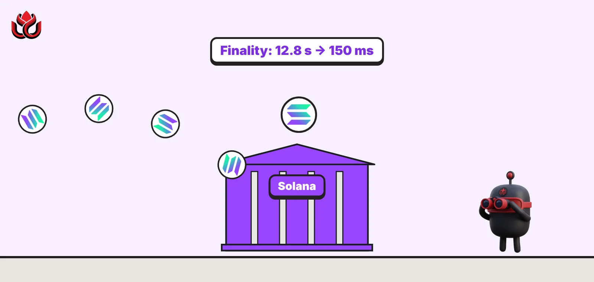
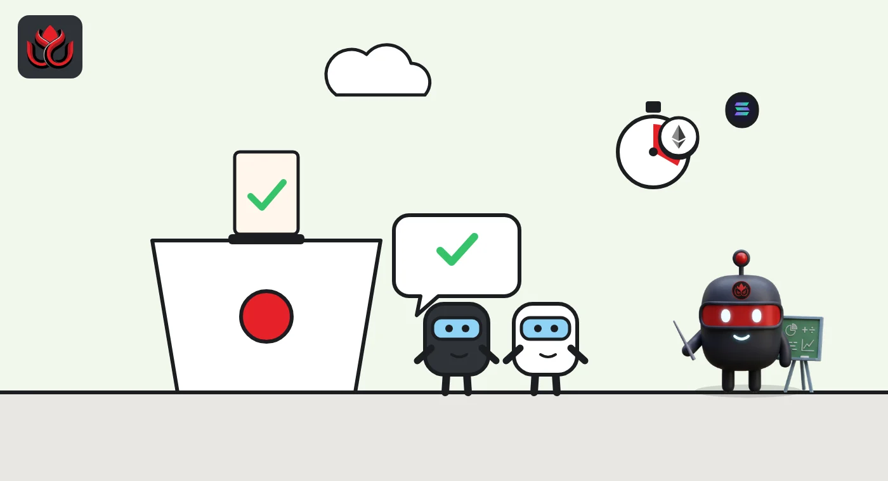
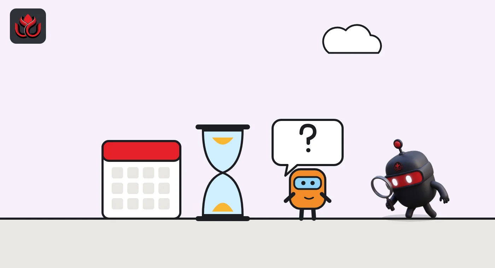

Solana swapped its consensus engine mid-flight: finality fell from 12.8 seconds to 150 ms
Alpenglow went live on Solana's main network on October 21, 2026, replacing the voting system the chain had run since day one. Payments now settle for good in a fraction of a second, validators pay a new fee, and the second half of the upgrade has no date.

Key points
- Alpenglow replaced TowerBFT as Solana's consensus protocol on mainnet-beta on October 21, 2026, without a network restart.
- Anza says the time until a transaction can't be reversed dropped from 12.8 seconds to about 150 milliseconds.
- Only Votor, the new voting engine, shipped. Rotor, the faster way to spread blocks, needs its own proposal and has no date.
The switch
Solana changed how its validators agree on blocks on Wednesday, October 21, 2026, and cut the time it takes for a transaction to become final from 12.8 seconds to about 150 milliseconds, according to Anza. The new consensus protocol, Alpenglow, replaced TowerBFT, which Solana had run since its first block. Anza, the engineering firm that built it, said on X that Alpenglow was live on mainnet-beta, the network's main public cluster.
Anza had announced the date on October 13, with a target time of about 10:50 a.m. ET. It called the project 18 months of work for a migration that happens in one slot, the short time window in which a single block is produced.
Finality is the moment a transaction can no longer be reversed. The switch happened on a running network, without a restart, after rehearsals on a community test cluster, then testnet and devnet, according to Anza's Alpenglow page.
How Alpenglow works, in plain English
Under TowerBFT, validators recorded their votes as transactions inside blocks. That cost fees and took up space. Under Alpenglow, validators send votes straight to each other. Each vote is signed with a BLS signature, a scheme that lets many signatures be combined into one, and the votes are bundled into a single compact certificate. Anza says this frees blockspace for users.
The voting engine, called Votor, runs two tracks at once. If validators holding 80% of staked SOL vote for a block in one round, it is final immediately. If not, a second track can finalize it after two rounds at 60%. Whichever finishes first wins. If a block producer goes silent, validators vote to skip its slot and the chain moves on. Anza's page also says Proof of History, Solana's original clock mechanism, is gone.
On safety, Anza describes a "20+20" model: the network stays safe with up to 20% of stake acting maliciously and another 20% offline at the same time. The SIMD-0326 proposal notes that this gives up the 33% tolerance for malicious stake that two-round protocols can offer, in exchange for one-round voting and 40% tolerance for crashed nodes.
For app developers, "confirmed" and "finalized" now mean the same thing.

What validators pay, and how it was tested
Validator costs change too. Under the proposal, each validator pays a Validator Admission Ticket to take part in an epoch, a period of roughly two days. The SIMD sets it at 80% of the old cost of vote fees, initially about 0.8 SOL per day or 1.6 SOL per epoch, and the whole amount is burned. A validator whose account cannot cover it is removed from the active set.
Testing was long. Anza lists a bug bounty of more than 25,000 SOL, 115 security researchers, nine successful migrations at scale and simulations across 1,500 nodes.
The handover itself was designed to be quick. A feature gate (SIMD-0384) switched on at an epoch boundary. Then, 5,000 slots later, blocks briefly carried only votes. Validators then signed a genesis certificate for Alpenglow once 82% of stake agreed, and consensus passed to Votor. Anza expected that step to take hundreds of milliseconds.
Solana time to finality, before and after Alpenglow
milliseconds
Source: Anza on X
Timeline
Anza unveils the Alpenglow design
SIMD-0326 proposal created
Anza publishes Quantumglow research
Anza sets October 21 as the mainnet date
Alpenglow goes live on mainnet-beta; target time about 10:50 a.m. ET

What is not done yet
This was only half of Alpenglow. The part that shipped is Votor. Rotor, the planned replacement for Turbine (the system that spreads block data across the network), is not covered by SIMD-0326. The proposal says Rotor will come later with its own SIMD. Anza says Rotor would replace Turbine's multi-layer tree with a single relay hop, so throughput no longer depends on one leader's upload bandwidth.
Anza has also named faster leader handovers and shorter physical distances between consecutive leaders as later work.
One more change will confuse dashboards. Votes no longer sit inside blocks, so headline transaction counts and TPS (transactions per second) figures that included votes will drop, even if user activity does not change. Non-vote activity is the fair number to compare.
Why faster finality matters
Payments, exchanges and trading apps care less about raw speed than about when money is truly settled. Alpenglow cuts that wait from seconds to a fraction of a second. Anza pitches this at institutions and payment firms, and at developers who want apps without retry logic.
The roadmap is still long. Besides Rotor, Anza has published research on Quantumglow, a version of Alpenglow designed to resist quantum computers. Anza first presented Alpenglow in May 2025, so the full design is still being rolled out in stages.
LC Insight analysis
This section is our reading of the facts above, not a statement of fact.
- We think the smooth handover is the real story. Changing consensus on a live chain holding large sums is the riskiest kind of upgrade, and Solana did it without a restart.
- The 20+20 model is a deliberate trade: less tolerance for malicious stake in exchange for faster finality and better survival of outages. The coming months will show how it holds.
- Expect confusion as TPS charts drop in the coming weeks. Votes no longer count as transactions, so compare non-vote activity before deciding usage has fallen.
What's next
- A SIMD and date for Rotor
- Client support for Alpenglow beyond Anza's Agave
- Changes to the Validator Admission Ticket
- Any finality or liveness incidents in the first weeks
Disclaimer. This article is based on public information and the sources listed below as of the update time shown. It is for information only and is not investment, legal or tax advice. Figures may change as companies and authorities publish new data.
Sources
- Anza on X, Alpenglow live on mainnet-beta (October 21, 2026)
- Anza on X, mainnet date announcement (October 13, 2026)
- Anza, Alpenglow overview and migration page
- SIMD-0326: Alpenglow (Solana Improvement Documents, GitHub)
- Anza blog, Alpenglow: A New Consensus for Solana (May 19, 2025)
- Anza blog, Quantumglow (July 30, 2026)